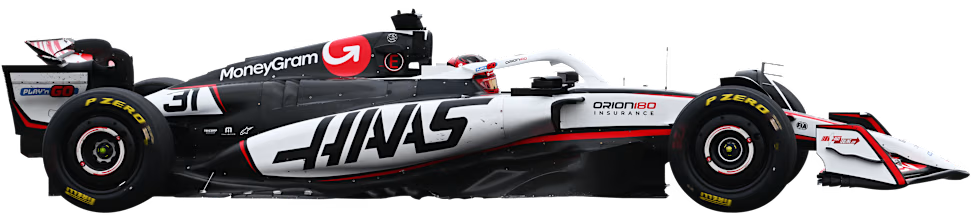

Equipos de la Fórmula 1
McLaren
McLaren lidera actualmente el campeonato de constructores con sólidos resultados que reflejan su buen trabajo técnico y estratégico. Fundado en 1963, es uno de los equipos más emblemáticos de la F1, con una rica historia de títulos y pilotos legendarios. Hoy, con una estructura renovada y una dupla joven, vuelve a ser protagonista.
Pilotos
Lando Norris (#4): Británico carismático y consistente, firme contendiente al título.
Oscar Piastri (#81): Piloto australiano que ha consolidado su lugar tras un debut muy prometedor.
Ferrari
Ferrari es el equipo más histórico de la Fórmula 1, presente desde 1950. La Scuderia es sinónimo de pasión y tradición, con una afición inigualable conocida como los tifosi. Aunque sus últimos títulos datan de la era Schumacher, siempre es protagonista.
Pilotos
Charles Leclerc (#16): Estandarte de Ferrari y siempre en la conversación por podios y victorias.
Lewis Hamilton (#44): Siete veces campeón mundial, se incorpora al equipo esta temporada tras su salida de Mercedes.
Mercedes-AMG Petronas
Mercedes regresó como equipo oficial en 2010 y desde 2014 dominó la era híbrida, logrando 8 campeonatos de constructores consecutivos. Es reconocido por su ingeniería alemana y excelencia en rendimiento.
Pilotos
George Russell (#63): Rápido y constante, ha tomado el rol principal del equipo esta temporada.
Andrea Kimi Antonelli (#12): Promesa italiana que debuta esta temporada como pieza joven del equipo.
Red Bull Racing
Red Bull es uno de los equipos más dominantes de la Fórmula 1 en los últimos años. Con sede en Milton Keynes, el equipo se caracteriza por su innovación y agresividad en pista. Desde 2010 ha ganado múltiples campeonatos de pilotos y constructores.
Pilotos
Max Verstappen (#1): Cuatro veces campeón mundial, sigue siendo la figura principal del equipo.
Yuki Tsunoda (#22): Promedio consistente y figura clave del equipo filial, Racing Bulls.
Williams
Williams es uno de los equipos históricos de la F1, con múltiples títulos en los años 80 y 90. Aunque en los últimos tiempos ha tenido dificultades, está en proceso de reconstrucción.
Pilotos
Alexander Albon (#23): Motor importante de resurgimiento del equipo.
Carlos Sainz (#55): Experimentado piloto español que se une a Williams en 2025.
Aston Martin
Aston Martin regresó a la F1 en 2021 con gran inversión y ambición. Con Fernando Alonso como figura principal, el equipo busca consolidarse en la parte alta de la parrilla.
Pilotos
Fernando Alonso (#14): Bicampeón mundial con experiencia y agresividad, pieza clave del equipo.
Lance Stroll (#18): Estabilidad en el equipo y continuidad estratégica.
Kick Sauber
El equipo suizo Sauber actualmente compite bajo el nombre Stake F1 Team. En 2026 se convertirá oficialmente en Audi, lo que representa un futuro prometedor para la escudería.
Pilotos
Nico Hulkenberg (#27): Veterano confiable con amplia trayectoria en F1.
Gabriel Bortoleto (#5): Promesa brasileña, proveniente de F2 y considerada para el futuro.
Racing Bulls
El equipo conocido como Toro Rosso y luego AlphaTauri ahora compite como RB. Es el equipo filial de Red Bull, enfocado en desarrollar talento joven.
Pilotos
Liam Lawson (#30): Promovido a Red Bull Racing, recibió el impulso de carrera que lo acelera esta temporada.
Isack Hadjar (#6): Debutante francés, promesa a futuro dentro del programa juvenil.
Haas
Haas es el único equipo estadounidense de la F1, debutó en 2016. Con recursos limitados, se enfoca en mantenerse competitivo en la zona baja/media de la parrilla.
Pilotos
Oliver Bearman (#87): Joven británico promovido desde Ferrari como carta a futuro.
Esteban Ocon (#31): Piloto francés experimentado que regresa a la competencia.
Alpine
Alpine, anteriormente Renault, es la marca francesa que busca consolidar su lugar en la parrilla. Ha mostrado altibajos pero sigue siendo un equipo competitivo en la zona media.
Pilotos
Pierre Gasly (#10): Franco piloto sólido y regular dentro de la parrilla.
Franco Colapinto (#43): Piloto argentino que tomó el lugar de Doohan en una etapa rotativa para varias carreras.